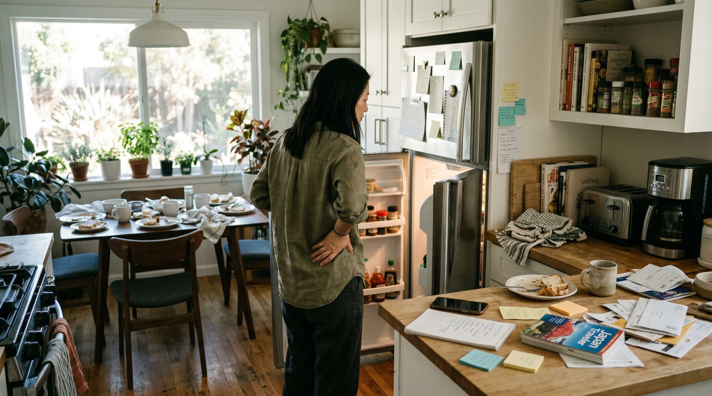
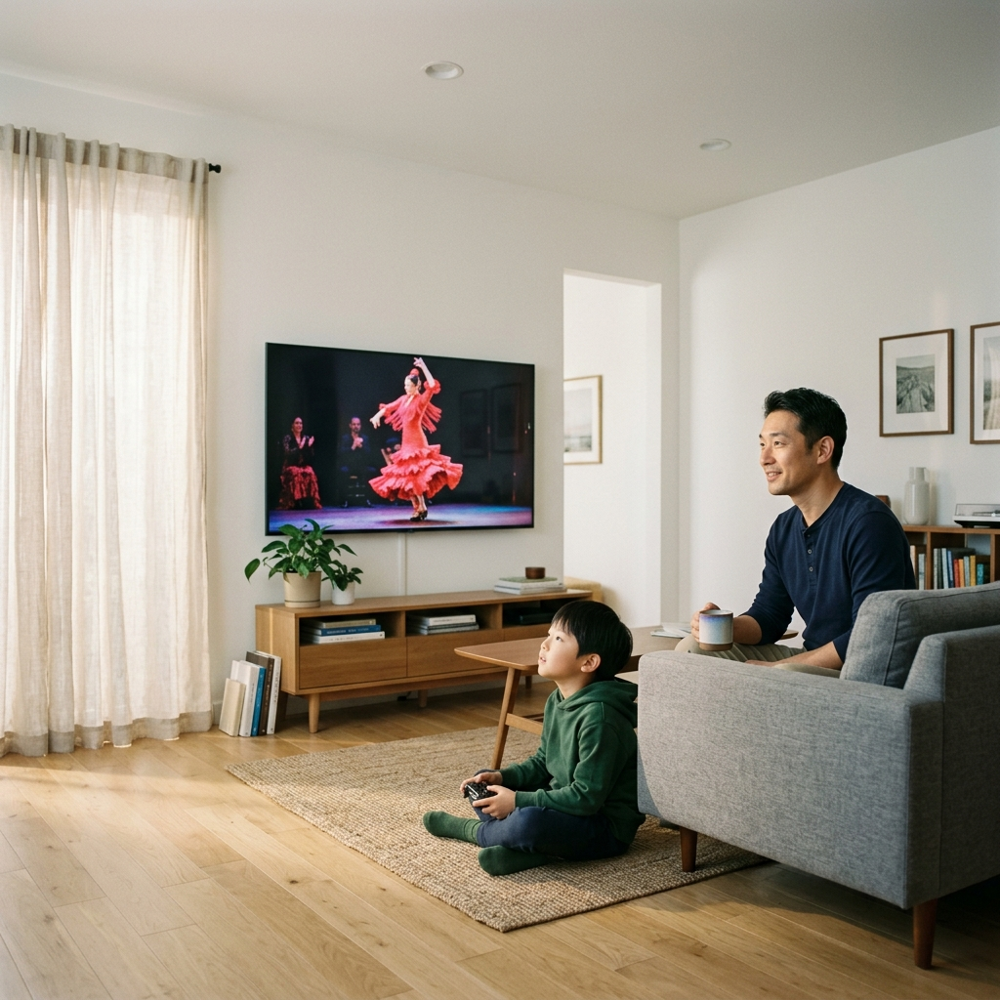
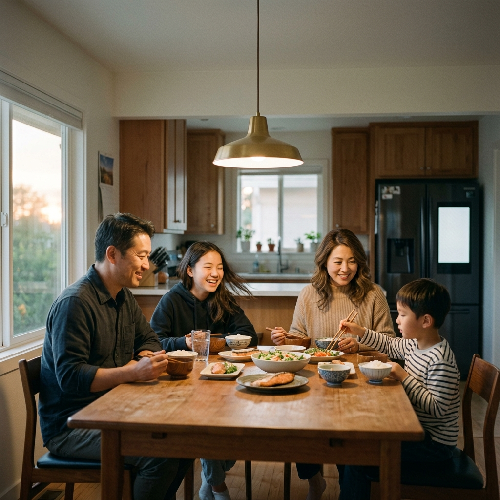

Growing Family
Disclosure Architecture & Trust Evolution
「今夜何食べる？」——毎晩、冷蔵庫の前で立ち尽くす。レシピアプリは開いたが、足りない食材、子どものアレルギー、帰宅時間の計算…。情報はあるのに、判断できない。
家族の情報共有のフリクション

もし AI が家族の文脈を理解したら、
情報共有の粒度を
家族ごとに変えられるとしたら？
Context Grammar は「誰に、何を、どこまで」を設計する言語。
Brain がコンテキストを記憶し、Grammar がUIに変換する。
Home Brain
AIが家族を理解するための3層メモリ構造。
スペースキーで1層ずつ表示
名前、家族構成、アレルギー、血液型、宗教、言語。
ヘルスデータ、代替品の許容範囲。AIが日々学習する層。
今夜の予定、今の所在地、今の認知負荷。
3層の交差点でAIは判断する。
だから「アレルギーのある子に危険なレシピ」も、「疲れている日に手の込んだ料理」も、「嫌いなブランドの代替品」も提案しない。
層が1つでも欠ければ、AIは「便利だが的外れな提案」を繰り返す。
Disclosure Dial — 情報の流れを2方向で制御する
AIに何でも知ってもらいたいわけではない。人によって、分野ごとに、知らせたい範囲は違う。
父は音楽の好みをAIに知ってほしいが、健康データは知られたくない。母は子供の教育には提案がほしいが、音楽は自分で探したい。
Disclosure Dialは、この「どこまで知らせるか」を、ドメインごと・人ごとに調整するダイヤルだ。
情報は2つの方向に流れる。あなたからAIへと、AIからあなた以外の人へ。
例：娘の腹痛パターンを「AIには全部記録させる」が、「父にはサマリーだけ見せる」「学校には存在だけ通知する」。
入口と出口を分けて制御することで、初めて粒度のある情報管理が成り立つ。
「知らせない × 任せる」は論理的に不可能。知らせる範囲を決めて初めて、任せる度合いが設計できる。
Disclosure × Autonomy — 論理的前提
2つのダイヤルの組み合わせで、AIの振る舞いが決まる。
任せられない
まずは夕食から。
最小限のDisclosureで、最大限の価値を証明する。
Device Role Map — Home Brainが統合制御する4つのサーフェス
同じHome Brainが、デバイスごとに異なる役割とUIを出し分ける。
Cognitive Load → 情報量を自動調整
Disclosure Dial → 人ごとに表示が変わる
Social Exposure → ゲスト時に自動切替
トリガー専用 → 他デバイスのUIが連動変形
食事の判断疲れ軽減
毎晩の「何食べる？」を3択カードに変換。家族の好みと冷蔵庫の状態から提案。
Substitution Modes
DELEGATION家族の好み構造化。代替品の許容範囲を4つのモードで表現。
任せていい範囲を、少しずつ広げていく。
牛乳は Exact（いつものブランド）。
おやつは Exploring（新しいものを試したい）。
メンバーごとに異なる粒度。
Exactは「いつもの」。Flexibleは「同じジャンルならお任せ」。Exploringは「シェフの気まぐれ」。SurpriseはOmakaseそのもの。
松葉杖の処分
3ヶ月放置された松葉杖。AIが処分タイミングを提案し、リセールまで代行。
30秒の作業。Decision Debtが1つ消えた。
信頼が育つ。
Brainが家族のパターンを学び、Disclosureの粒度が動き始める。
娘の医療ログ
ESCALATION「お腹痛い」のパターンを記録。Disclosureが家族内で異なる粒度で動く。
AIは診断しない。パターンを見つけ、医師への橋渡しをする。
「ここまでは私の仕事、ここからは人間の仕事」と線を引く設計。
ゲストモード — 3トークン同時発火
ADAPTATION環境の変化に応じてUIが自動で変形する。Doorbell検知でSocial Exposureが変化し、TV・Phone・Nestが同時に切り替わる。
息子：サッカー 15:30 / 母：ダンス 19:00
家族の予定は非表示
Connective Disclosure
守るだけでなく、つなげる。家族の関心事を自然に共有する。


家族が変わる瞬間。
AIは「決定を加速する」のではない。本人のペースを守る環境を提供する。
娘のジェンダー
GeminiプロファイルでPronounを変更。
「誰に、いつ、どこまで」の選択画面が現れる。
Disclosure Map — 初日 vs 12ヶ月後
ほぼデフォルト
domain × person × granularity
Autonomy Dial — 1年間の進化
● = 天井。すべてが Auto に向かうわけではない。
壊れ方にこそ信頼が現れる
ESCALATIONAIが間違えた後、どう信頼を取り戻すか。Autonomy Dialの自動降格と段階的回復。
Brain Accumulated層が更新される。
成功が続けばConfirmへ復帰。
Context Token 発火マップ
| 夕食提案 | Decision Debt |
代替品 | 医療ログ | ゲスト | Connective | Pronoun | |
|---|---|---|---|---|---|---|---|
| Intent | ● | ● | ● | ● | ○ | ○ | ● |
| ① Physical State | ○ | — | — | ● | — | — | — |
| ② Cognitive Load | ● | ● | ○ | ○ | — | — | — |
| ③ Social Exposure | — | — | — | ○ | ● | ● | ● |
| ④ Priority Weight | ● | ○ | ● | ● | — | ○ | ● |
| ⑤ Form Factor | ○ | ○ | — | — | ● | ● | ○ |
| ⑥ Feasibility | ● | ● | ● | — | — | ○ | — |
| ⑦ Autonomy Dial | ● | ● | ● | ● | ● | ● | ● |
| ⑧ Disclosure Dial | ○ | — | — | ● | ● | ● | ● |
| Brain | ● | ● | ● | ● | ○ | ● | ● |
Week 1 vs Month 6 — 信頼は時間をかけて育つ
初めてのお店では「何がおすすめですか？」。常連になると「いつもので」。この変化に6ヶ月かかる。AIも同じ。
🛒 「サーモンを注文しますか？」
📋 「アレルギー情報を確認してください」
🛒 通知のみ — ワンタップで変更可
📋 アレルギーチェック自動完了
冷蔵庫は「何を買うか」を知っている。
息子の掃除機ミッションは自動で始まる。
娘のpronounは、彼女が選んだ順序で家族に届いた。
AIは静かに裏で動いている。
家族はただ、一緒に夕食を囲んでいる。
設計の見どころ
domain × person × granularity
Emotional Peakの設計
粒度が異なるDisclosure
Connective Discovery
守る + つなげる
Decision Debt解消
4段階の好み構造化
3トークン同時発火
